Справочник по Git и GitHub · модуль 3 · ветки
Глава 3.5
Stash, cherry-pick, rebase:
отложить, перенести, переставить
В главе разобраны три действия, которые дополняют слияние. Stash убирает незаконченную правку во временное хранилище, чтобы освободить папку для срочной работы. Cherry-pick переносит в текущую ветку один коммит из другой ветки. Rebase переставляет коммиты ветки на последний коммит main, после чего ветка сливается прямой линией. Все три действия показаны на проекте sait-vizitka.
- Категория
- Ветки
- Уровень
- Начальный
- Что получится
- Телефон, исправленная почта и правка README в
main, история прямой линией - Сколько занимает
- Около сорока минут за компьютером
§1Задача главы
В главах 3.3 и 3.4 работа из ветки попадала в main слиянием целиком: все коммиты ветки, а при расхождении — ещё и коммит слияния. В работе встречаются три ситуации, где этого мало или это неудобно.
| Ситуация | Что нужно | Действие |
|---|---|---|
| Правка начата, но не закончена; нужно срочно сделать другую работу | Убрать правку из папки и потом вернуть | stash |
В незаконченной ветке есть один коммит, который нужен в main уже сейчас | Перенести только этот коммит | cherry-pick |
Пока велась ветка, main ушла вперёд | Продолжить ветку от последнего коммита main | rebase |
Глава идёт в этом порядке. Каждое действие показано кнопкой или командой в VS Code и командой в терминале.
Зачем это нужно в работе
- Прерваться без мусорного коммита. Срочная задача приходит посреди работы. Stash убирает незаконченную правку, и её не приходится коммитить с сообщением вроде «недоделано».
- Взять исправление из чужой ветки. Коллега починил ошибку в ветке, которая ещё неделю будет в работе. Cherry-pick переносит одно исправление, остальные коммиты ветки остаются на месте.
- Держать историю читаемой. После rebase ветка сливается fast-forward, без коммита слияния, и история
mainостаётся прямой линией. - Подготовить ветку к слиянию. Если в
mainпришли правки, которые задевают вашу работу, конфликты появятся при rebase. Их разбирают в вашей ветке до того, как её работа попадёт вmain.
В главе используется проект sait-vizitka в том виде, в каком он остался после главы 3.4. В нём одна ветка main и 27 коммитов, 23 из них на GitHub не отправлены, список изменений пуст. Раздел GRAPH переключён в режим All. Имена коммитов, сделанных вами, будут отличаться от показанных. Первая часть главы — stash.
Если проекта нет или он в другом состоянии
Архив содержит проект sait-vizitka в том состоянии, с которого начинается глава, — после главы 3.4. В нём файлы проекта, папка .git со всей историей и ветками и адрес origin. Имена коммитов, которые уже есть в архиве, совпадают с показанными в главе. Коммиты, которые вы сделаете по ходу главы, получат свои имена: имя коммита зависит от автора и времени.
- Распакуйте архив в папку, где лежат ваши проекты. Появится папка
sait-vizitka. Если папка с таким именем там уже есть, сначала переименуйте старую, например вsait-vizitka-staraya. - Откройте новую папку в VS Code: File → Open Folder →
sait-vizitka. - Проверьте историю в терминале (Ctrl + `). Ответ должен совпасть с этим:
git log --oneline --graph -3
* 0d62db4 Merge branch 'stil-podvala'
|\
| * f37fe1f Добавил стиль подвала
* | c6508f8 Добавил стиль кнопки
|/
В строке состояния — main, на кнопке 23↑, список изменений пуст.
Папка .git скрытая: в Finder и Проводнике её по умолчанию не видно, но VS Code и Git работают с ней как обычно. Имя и почту автора для ваших коммитов Git берёт из настроек главы 1.3. Кнопку Sync Changes не нажимайте: адрес origin ведёт в репозиторий автора справочника, и отправить туда коммиты не получится.
§2Шаг 1. Начать правку в новой ветке
Задача: добавить на страницу контактов телефон. Под неё создаём ветку telefon, как в шаге 1 главы 3.2, и в kontakty.html после ссылки на профиль добавляем строку:
<p><a href="https://github.com/MaximBytecamp">Профиль на GitHub</a></p> <form>
<p><a href="https://github.com/MaximBytecamp">Профиль на GitHub</a></p> <p>Телефон: +7 900 123-45-67</p> <form>
git switch -c telefon
Сохраняем файл. Коммит не делаем: номер ещё нужно уточнить.
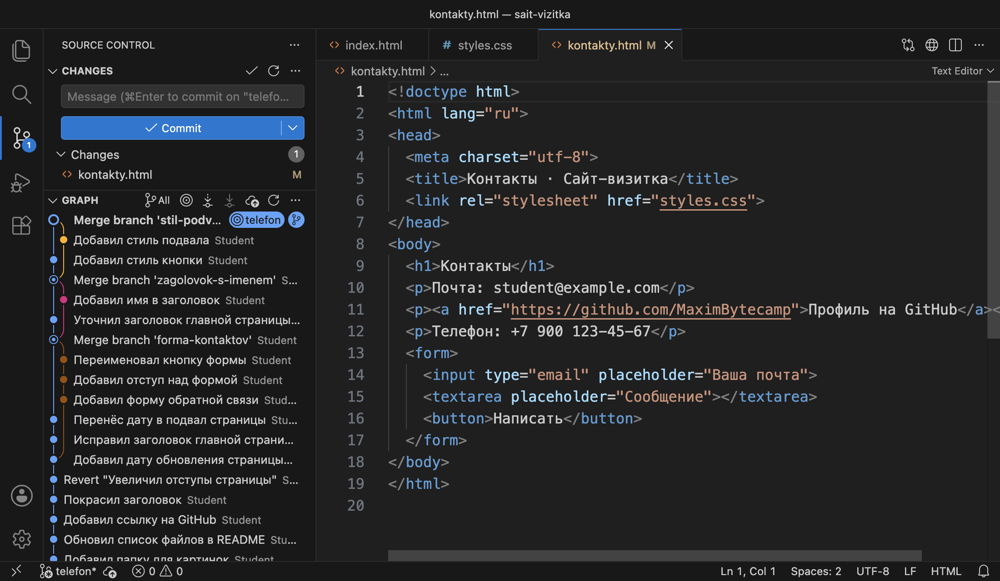
telefon, в Changes kontakty.html. Строка 12 — телефон, он не закоммичен.В этот момент приходит срочная задача: на странице контактов неверный адрес почты, и исправить его нужно в main. Если переключиться на main прямо сейчас, незакоммиченная правка переедет туда вместе с вами, как в шаге 8 главы 3.2. Тогда телефон легко отобрать в коммит с почтой по ошибке. Коммит с незаконченным телефоном в ветке telefon тоже не нужен: номер ещё не уточнён.
Что получилось.В ветке telefon незакоммиченная правка. Перед переходом на main её нужно убрать из папки, не теряя.
§3Шаг 2. Убрать правку в stash
Недописанное письмо можно убрать в ящик стола: стол освобождается для срочной работы, а письмо лежит на месте и потом возвращается. В Git такой ящик называется stash.
Stash — хранилище незакоммиченных правок внутри репозитория. Команда stash забирает правки из папки и индекса и кладёт их в хранилище. Папка становится такой, как в последнем коммите, список изменений пустеет. Записи хранилища не относятся ни к одной ветке, их можно вернуть на любой.
В палитре команд выбираем Git: Stash. VS Code спрашивает сообщение — подпись, по которой запись потом узнают. Вводим «Телефон на странице контактов» и нажимаем Enter:
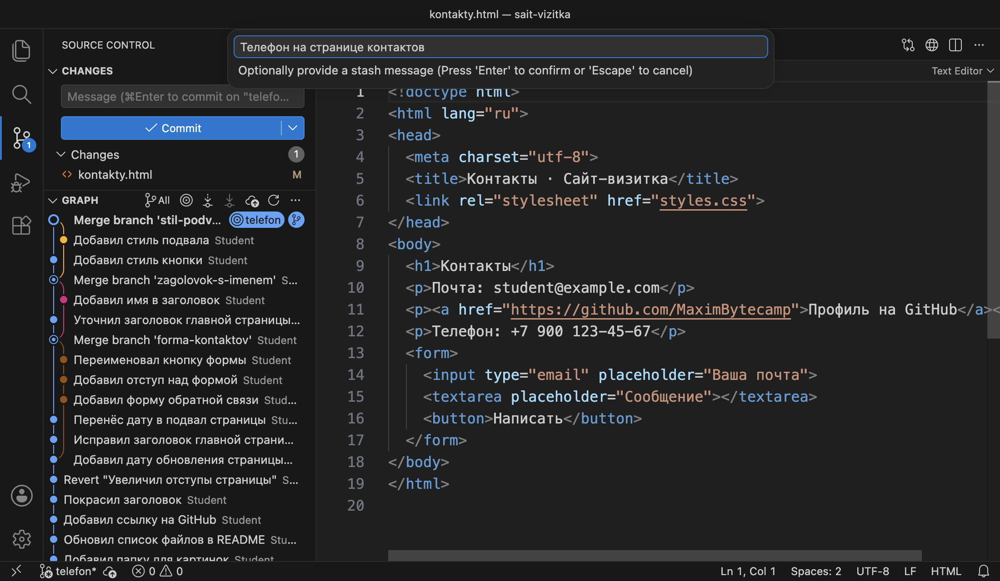
git stash push -m "Телефон на странице контактов" Saved working directory and index state On telefon: Телефон на странице контактов git stash list stash@{0}: On telefon: Телефон на странице контактов git status --short
Git сохранил состояние папки и индекса (working directory and index state). В списке хранилища одна запись. Её имя stash@{0}: номер 0 у самой новой записи, следующая сдвинет её на номер 1. После имени — на какой ветке сделана запись и её сообщение. git status --short ничего не печатает: изменений нет.
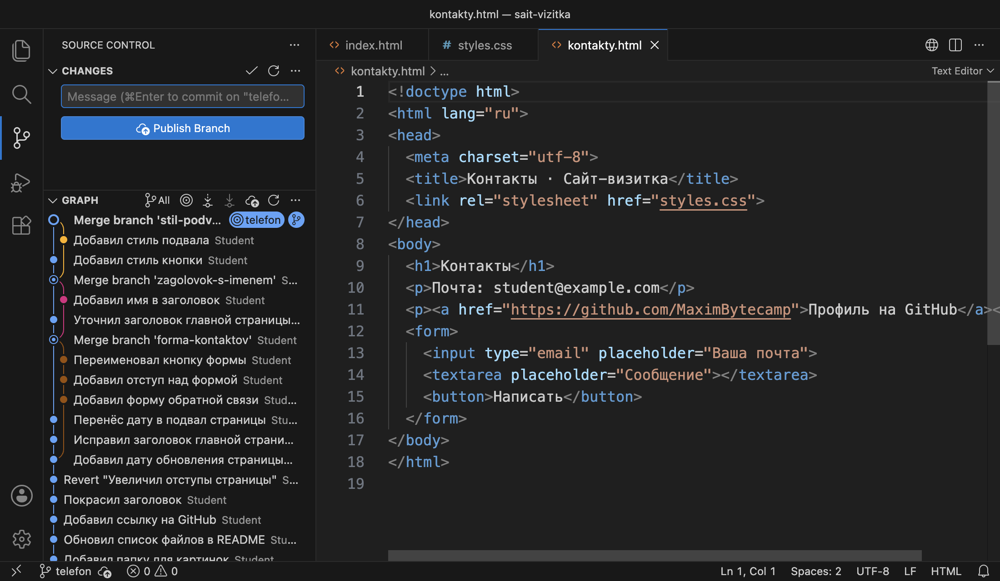
Что лежит в записи, показывает Git: View Stash...: команда предлагает выбрать запись и открывает её как окно сравнения.
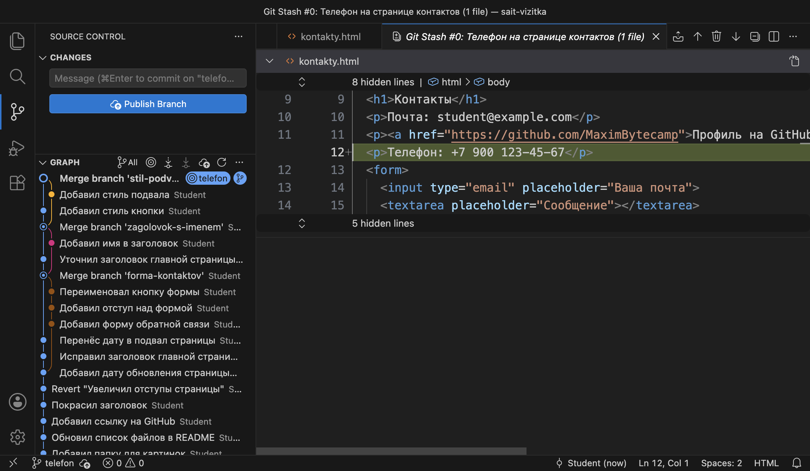
Новые файлы, за которыми Git ещё не следит, обычная команда stash не забирает. Для них есть Git: Stash (Include Untracked), в терминале — git stash push -u. Кнопка Stash & Checkout в окне отказа из шага 9 главы 3.2 делает stash и сразу переключает ветку.
Что получилось.Правка лежит в записи stash@{0}, папка чистая. Теперь можно переключиться на main.
§4Шаг 3. Сделать срочную правку в main
Переходим на main и в kontakty.html исправляем адрес:
<p>Почта: student@example.com</p>
<p>Почта: maxim@example.com</p>
git switch main git commit -am "Исправил адрес почты на странице контактов" [main 895b31b] Исправил адрес почты на странице контактов 1 file changed, 1 insertion(+), 1 deletion(-)
В коммит ушла одна строка — почта. Телефона в нём нет, потому что телефон лежит в stash.
Что получилось.Срочная правка в main, коммит 895b31b. Можно возвращаться к телефону.
§5Шаг 4. Вернуть правку из stash
Переходим обратно на ветку telefon. В палитре команд выбираем Git: Pop Latest Stash — «достать последнюю запись»:
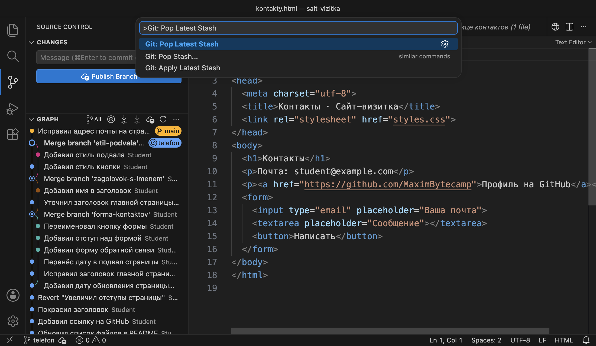
git switch telefon git stash pop On branch telefon Changes not staged for commit: (use "git add <file>..." to update what will be committed) (use "git restore <file>..." to discard changes in working directory) modified: kontakty.html no changes added to commit (use "git add" and/or "git commit -a") Dropped refs/stash@{0} (a989cb8efaf2781bfbbd5162d3539f64a5b1baed) git stash list
Git вернул правку в папку: kontakty.html снова изменён. Последняя строка — запись stash@{0} удалена (dropped) из хранилища. Список хранилища пуст. Строки в скобках — обычные подсказки git status о командах git add и git restore.
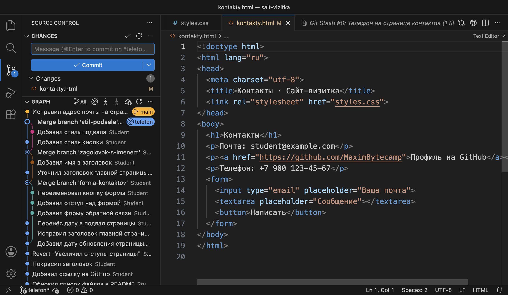
main ушла на коммит вперёд.Номер уточнён, коммитим телефон в его ветке:
git commit -am "Добавил телефон на страницу контактов"
[telefon 81e99a3] Добавил телефон на страницу контактов
1 file changed, 1 insertion(+)
Весь путь правки за шаги 1–4 — на схеме.
main.Что получилось.Телефон закоммичен в ветке telefon, хранилище пусто. В main исправлена почта, но в ветке telefon её ещё нет. Вторая часть главы — cherry-pick.
§6Шаг 5. Сделать пробную ветку
Создаём от main ветку temnaya-tema и делаем в ней два коммита. Первый — начало тёмной темы, она пока не готова. Второй — правка README, которая к теме не относится: описание страницы контактов устарело после главы 3.3.
body {
background: #1B1A19;
color: #F4F1EC;
}
- `kontakty.html` — страница контактов с формой обратной связи
git switch -c temnaya-tema main git commit -am "Начал тёмную тему" [temnaya-tema 436c4d0] Начал тёмную тему git commit -am "Дополнил описание страницы контактов в README" [temnaya-tema fd6a6a1] Дополнил описание страницы контактов в README
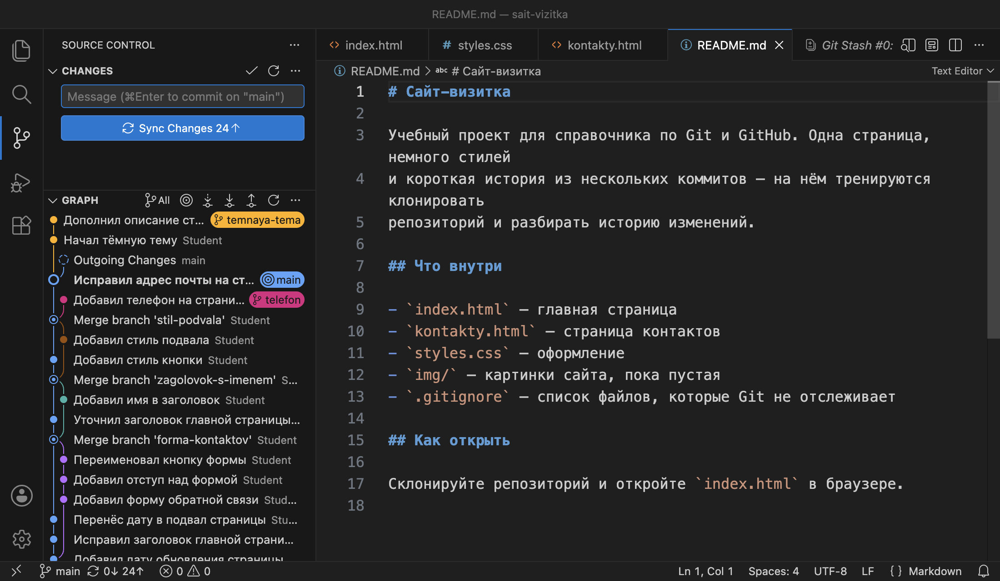
main. В графе над ней два коммита ветки temnaya-tema. В README строка 10 пока прежняя.Правка README нужна в main сейчас. Слить ветку целиком нельзя: вместе с README в main придёт недоделанная тёмная тема.
Что получилось.В ветке temnaya-tema два коммита, нужен только второй.
§7Шаг 6. Перенести один коммит: cherry-pick
Из чужой тетради с рецептами можно переписать в свою один рецепт. В своей тетради появится новая запись с тем же текстом, а в чужой ничего не изменится.
Cherry-pick — действие, которое берёт изменения одного коммита и создаёт с ними новый коммит в текущей ветке. Сообщение, автор и дата правки сохраняются. Имя у нового коммита другое: у него другой родитель, а имя вычисляется из содержимого коммита (глава 2.4). Исходный коммит остаётся в своей ветке.
Переходим на main. В разделе GRAPH нажимаем правой кнопкой на коммит «Дополнил описание страницы контактов в README» ветки temnaya-tema и выбираем Cherry Pick:
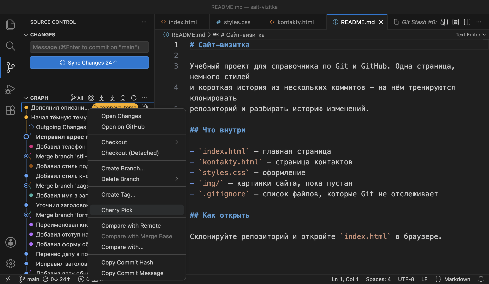
git switch main git cherry-pick fd6a6a1 [main 79cd7b5] Дополнил описание страницы контактов в README Date: Tue Oct 20 23:17:02 2026 +0300 1 file changed, 1 insertion(+), 1 deletion(-)
В main новый коммит 79cd7b5 с тем же сообщением. Строка Date — время исходной правки: Git сохранил его, потому что дата автора переносится вместе с изменениями. Та же команда есть в палитре — Git: Cherry Pick...; она спрашивает имя коммита (Please provide the commit hash).
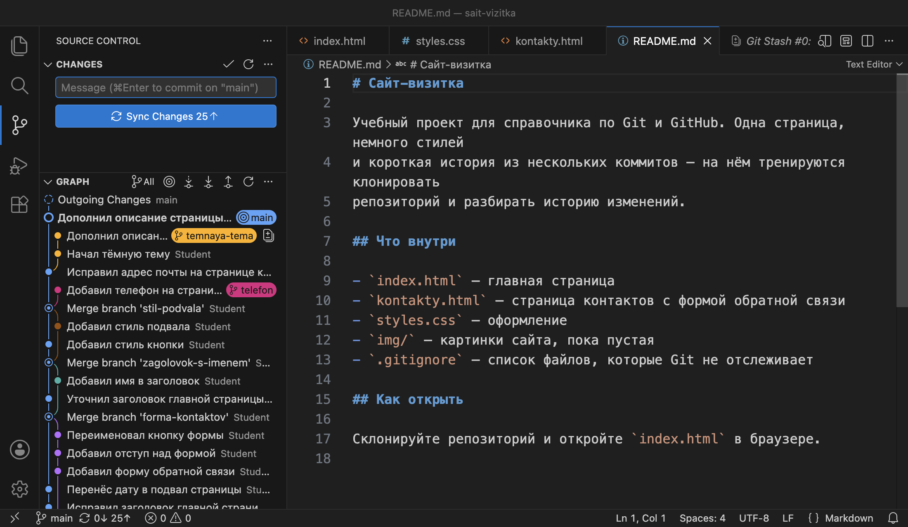
main и исходный в temnaya-tema.git log --oneline --graph --all -4
* 79cd7b5 Дополнил описание страницы контактов в README
| * fd6a6a1 Дополнил описание страницы контактов в README
| * 436c4d0 Начал тёмную тему
|/
* 895b31b Исправил адрес почты на странице контактов
fd6a6a1 повторена в main новым коммитом 79cd7b5. Ветка temnaya-tema не изменилась.Тёмную тему решено отложить, ветку пробы удаляем. Она не слита, поэтому нужен ключ -D, как в шаге 8 главы 3.3. Правка README остаётся в main.
git branch -D temnaya-tema
Deleted branch temnaya-tema (was fd6a6a1).
Что получилось.В main правка README без тёмной темы. Теперь в main два коммита, которых нет в ветке telefon. Третья часть главы — rebase.
§8Шаг 7. Посмотреть, насколько отстала ветка
Переходим на ветку telefon. Она создана от коммита 0d62db4, а main с тех пор получила почту и README:
git switch telefon git log --oneline --graph --all -4 * 79cd7b5 Дополнил описание страницы контактов в README * 895b31b Исправил адрес почты на странице контактов | * 81e99a3 Добавил телефон на страницу контактов |/ * 0d62db4 Merge branch 'stil-podvala' |\
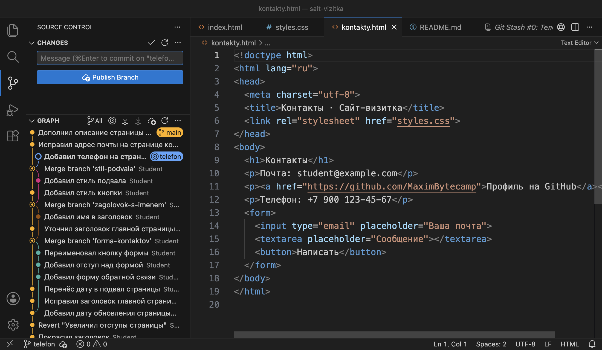
telefon до rebase. В строке 10 старая почта: исправление есть только в main.Ветки разошлись, поэтому слияние telefon в main сейчас создало бы коммит слияния, как в главе 3.3. Есть другой путь: сначала переставить коммит телефона так, будто ветка создана от последнего коммита main.
Что получилось.Ветка telefon отстаёт от main на два коммита, своих у неё один.
§9Шаг 8. Перебазировать ветку: rebase
Черновик доклада начат по старой версии плана. План обновили, и черновик переписывают так, чтобы он опирался на новую версию: текст доклада тот же, но основа другая.
Rebase (перебазирование) — действие, которое берёт коммиты текущей ветки, отсутствующие в другой ветке, и создаёт их заново поверх её последнего коммита. Ветка переходит на новые коммиты. Изменения в них те же, а имена новые, потому что у коммитов другие родители. Прежние коммиты остаются только в журнале git reflog, как в шаге 7 главы 2.6.
Вы стоите на telefon. В палитре команд выбираем Git: Rebase Branch... и в списке — main:
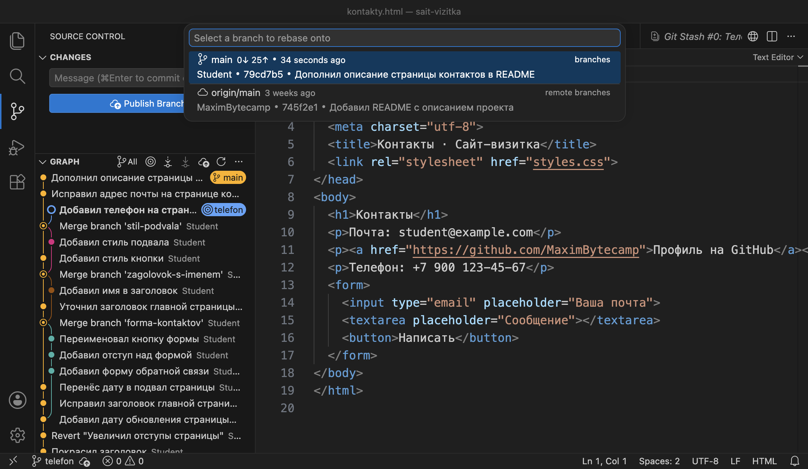
git rebase main
Rebasing (1/1)
Successfully rebased and updated refs/heads/telefon.
Rebasing (1/1) — Git пересоздаёт коммиты ветки по одному, здесь коммит один. Вторая строка — перебазирование прошло, ветка telefon обновлена.
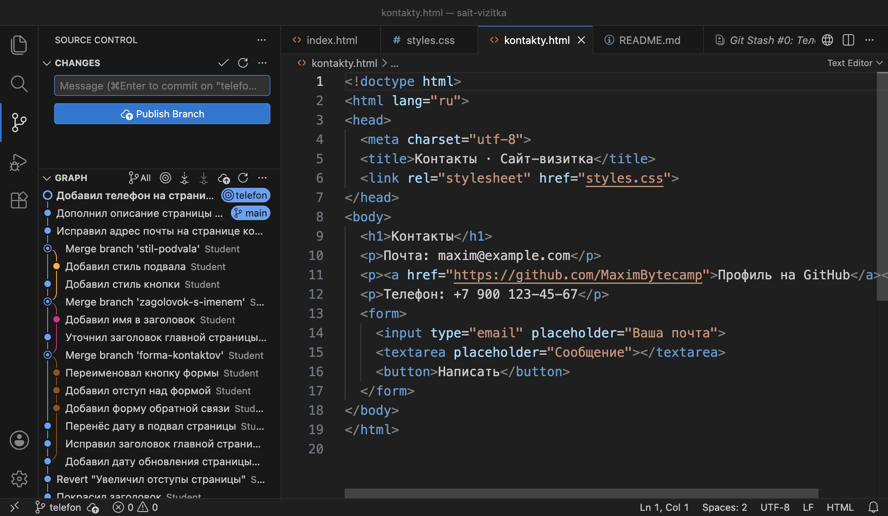
main, в строке 12 телефон. В графе telefon стоит сразу над main, на одной линии.git log --oneline --graph --all -4
* 8d0dd10 Добавил телефон на страницу контактов
* 79cd7b5 Дополнил описание страницы контактов в README
* 895b31b Исправил адрес почты на странице контактов
* 0d62db4 Merge branch 'stil-podvala'
|\
Коммит телефона назывался 81e99a3, теперь — 8d0dd10. Его родитель — 79cd7b5, последний коммит main. На схеме — что изменилось.
79cd7b5 и получил имя 8d0dd10. Прежний 81e99a3 остался без ветки.Rebase заменяет коммиты новыми, как amend и reset в главе 2.6. Если ветка уже на GitHub, у сервера и у коллег останутся прежние коммиты, и истории разойдутся. Поэтому перебазируют только ветки, которые ещё не отправлены. Ветку, которую уже отправили, сливают обычным слиянием.
Если коммит ветки и коммиты main меняют одно место, rebase останавливается с конфликтом. Он разбирается так же, как в главе 3.4: правка файла и git add. Затем перебазирование продолжают командой git rebase --continue или отменяют командой git rebase --abort.
Что получилось.Ветка telefon продолжает main прямой линией. Осталось слить её.
§10Шаг 9. Слить ветку прямой линией
Переходим на main и сливаем telefon, как в главе 3.3: палитра команд → Git: Merge... → telefon.
git switch main git merge telefon Updating 79cd7b5..8d0dd10 Fast-forward kontakty.html | 1 + 1 file changed, 1 insertion(+) git branch -d telefon Deleted branch telefon (was 8d0dd10).
Слияние прошло fast-forward: после rebase у main нет коммитов, которых нет в telefon, и Git перенёс имя main вперёд. Коммита слияния нет. Слитую ветку удаляем.
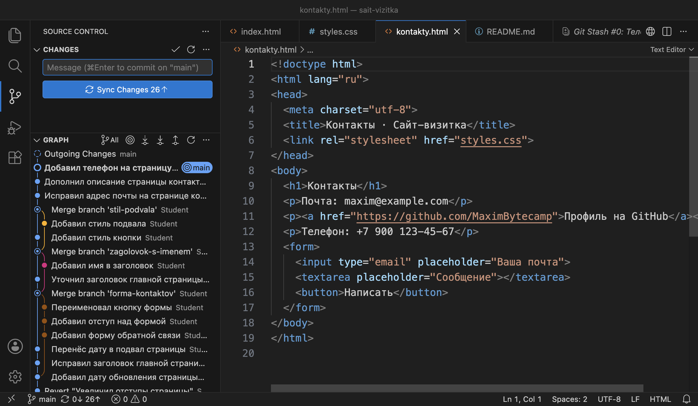
main одной линией, на кнопке 26↑.Что получилось.В проекте одна ветка main, 30 коммитов, 26 из них на GitHub не отправлены, список изменений пуст. Ниже собраны команды главы и выбор между слиянием, cherry-pick и rebase.
§11Справка: команды и выбор способа
| Что нужно | В VS Code | Команда |
|---|---|---|
| Убрать правки в stash | Git: Stash | git stash push -m "сообщение" |
| То же вместе с новыми файлами | Git: Stash (Include Untracked) | git stash push -u |
| Список записей | Git: View Stash... | git stash list |
| Вернуть последнюю запись и удалить её | Git: Pop Latest Stash | git stash pop |
| Вернуть запись и оставить её | Git: Apply Latest Stash | git stash apply |
| Удалить запись без возврата | Git: Drop Stash... | git stash drop |
| Перенести один коммит | Cherry Pick в меню графа или Git: Cherry Pick... | git cherry-pick имя |
| Перебазировать текущую ветку | Git: Rebase Branch... | git rebase main |
| Продолжить или отменить rebase после конфликта | Кнопки в главе не показаны | git rebase --continue, git rebase --abort |
Все три способа переноса работы из ветки в ветку отличаются тем, что переносят и что происходит с историей:
| Слияние | Cherry-pick | Rebase | |
|---|---|---|---|
| Что переносит | Все коммиты ветки | Один выбранный коммит | Коммиты ветки на новую основу |
| Новые коммиты | Коммит слияния, если ветки разошлись | Копия коммита | Копии всех коммитов ветки |
| Меняет имена существующих коммитов | Нет | Нет, исходный остаётся | Да, коммиты ветки заменяются |
| Для отправленных коммитов | Подходит | Подходит | Не подходит |
| В главе | 3.3, 3.4 | README из temnaya-tema | ветка telefon |
§12Частые вопросы
81e99a3 стал 8d0dd10. Поэтому отправленные ветки не перебазируют.§13Проверьте себя
Вы наполовину переписали index.html, а нужно срочно переключиться на другую ветку. Что сделать, чтобы не коммитить незаконченное?
Git: Stash с понятным сообщением или git stash push -m "…". Папка станет чистой, можно переключаться. Потом вернуться на ветку и выполнить Git: Pop Latest Stash.
Чем Pop отличается от Apply?
Обе команды возвращают правки в папку. Pop после этого удаляет запись из хранилища, Apply оставляет её.
В ветке коллеги есть исправление опечатки, вся остальная ветка не готова. Как получить в main только исправление?
Перейти на main и сделать cherry-pick этого коммита: Cherry Pick в меню графа или git cherry-pick имя. В main появится копия коммита с новым именем.
Почему у коммита после cherry-pick другое имя?
У копии другой родитель — последний коммит текущей ветки. Имя вычисляется из содержимого коммита, в том числе из родителя, поэтому оно другое.
Вы на ветке telefon выполнили git rebase main. Какая ветка изменилась?
telefon: её коммиты созданы заново поверх последнего коммита main. Ветка main не изменилась.
Ветка уже отправлена на GitHub, и в main пришли новые коммиты. Перебазировать её или слить?
Слить. Rebase заменил бы отправленные коммиты новыми, и история на компьютере разошлась бы с копией на GitHub.
§14Шпаргалка по главе
Git: Stash
git stash push -m "…"
-u — с новыми файлами
Git: Pop Latest Stash
git stash pop / apply
git stash list
меню графа → Cherry Pick
git cherry-pick имя
копия с новым именем
Git: Rebase Branch... → main
git rebase main
затем слияние — fast-forward
правка файла, git add
git rebase --continue
git rebase --abort
rebase отправленных коммитов
Итог главы
Stash убирает незакоммиченные правки в хранилище и освобождает папку: так срочная правка в main сделана без незаконченного телефона. Pop возвращает правку и удаляет запись, Apply возвращает и оставляет. Cherry-pick повторяет один коммит в текущей ветке новым коммитом с новым именем: так в main попала правка README без тёмной темы. Rebase создаёт коммиты ветки заново поверх последнего коммита другой ветки: после него ветка telefon слилась в main fast-forward, прямой линией. Rebase меняет имена коммитов, поэтому его применяют только к веткам, которые ещё не отправлены на GitHub. В проекте одна ветка main с тремя новыми коммитами.
- Кадры и ответы команд получены на клоне проекта sait-vizitka в Git версии 2.51.1 и VS Code версии 1.138.
- Хранилище,
push -m,-u,pop,apply,drop— документация git-stash. - Перенос коммита и сохранение даты автора — документация git-cherry-pick.
- Перебазирование,
--continue,--abort— документация git-rebase; совет не перебазировать отправленные коммиты — книга Pro Git, «Перебазирование». - Команды Git: Stash, Cherry Pick, Rebase Branch — документация VS Code, раздел Source Control.